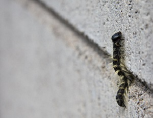
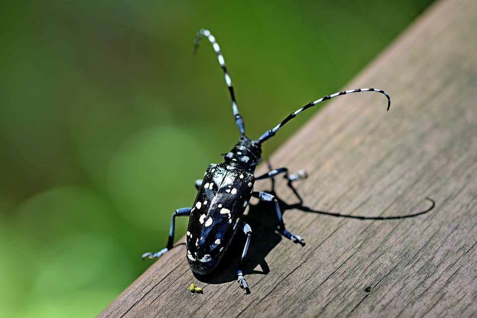
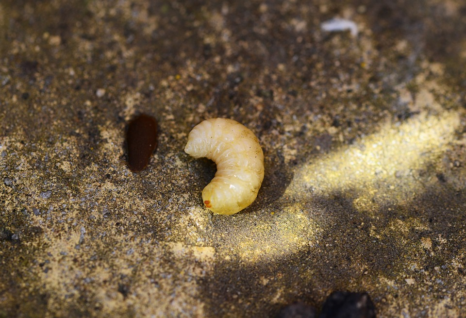
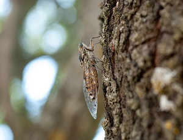
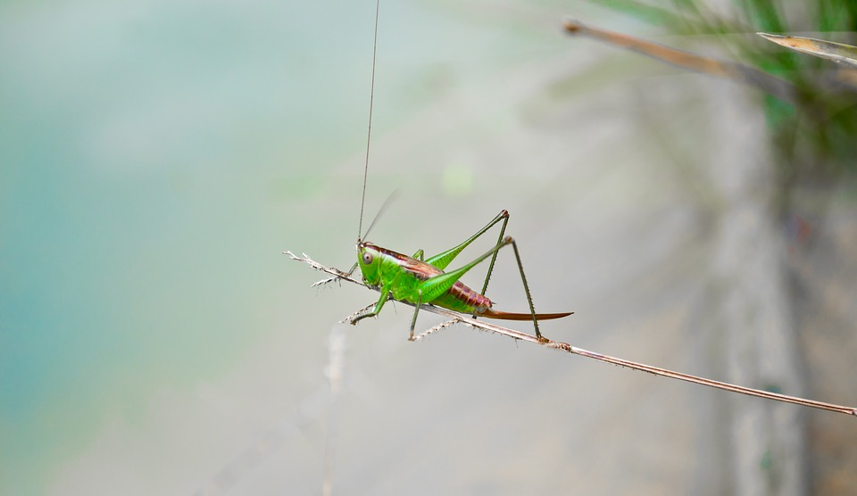
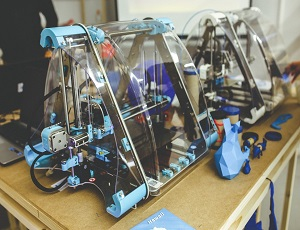
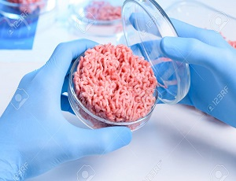
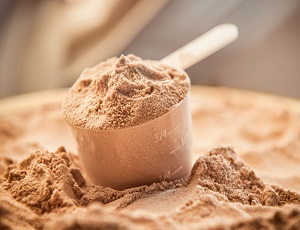

これからの食糧
近い将来、人口爆発(じんこうばくはつ)や環境破壊(かんきょうはかい)によって世界中で食べ物が不足することが予測されています。しかし、その食糧不足を解決(かいけつ)することが出来る可能性があるのが昆虫(こんちゅう)です。
虫を今でも食べている人たちは世界にはおよそ20億人います。実は国際連合(こくさいれんごう)も昆虫食をすすめるくらい、昆虫はすごい食べ物なんです！
昆虫を食べることのいいところは主に3つあります。
1つ目は、昆虫には栄養素(えいようそ)がたくさんあるという点です。
昆虫にふくまれる栄養素は、半分以上(いじょう)がタンパク質で、高タンパク低脂肪(ていしぼう)の昆虫はとてもヘルシーです。
タンパク質の他にも、ビタミンやミネラルもたくさん含んでいます。
2つ目は、家畜業(かちくぎょう)とくらべて生産(せいさん)するのに手間がかからないという点です。
ブタや牛などの大きな家畜を育てるのには、多くのエサや水が必要(ひつよう)になりますが、昆虫には少なくてすみます。他にも、世界に排出(はいしゅつ)されているアンモニアの60～70パーセントが家畜からのもので、環境や地球へ悪影響(あくえいきょう)を与えています。
3つ目は、味がおいしいという点です。
その昆虫の中でも美味しいと言われる昆虫をいくつか紹介(しょうかい)します。
モンクロシャチホコ

サクラのような味
サクラの木に大量発生することからサクラケムシとよばれるこの毛虫はサクラの葉を食べて成長するからか食べると、サクラのかおりがして美味しい。
カミキリムシ

トロのような味
幼虫(ようちゅう)のカミキリムシはとろりとした脂肪(しぼう)が美味しく、まるでトロの味のようで、やみつきになる。
ハチノコ

ウナギのような味
クロスズメバチの幼虫で、世界のいろんな国で食べられています。味覚(みかく)センサーで計測(けいそく)したところ、ウナギと同じ味だったという話もある。
セミ

ナッツのような味
あげるとナッツのような味になり、はじめての人でも食べやすいクセのない味。
コオロギ、バッタ

エビのような味
火を通すとエビのように赤くなり、食感もエビとそっくり。タンパク質が多く、栄養もすばらしい。
以上、昆虫食について紹介しましたが、あぶない場合もあります。
・虫を生で食べることはあぶないので、必ず火を通して食べましょう。
・虫はくさりやすいので、死んだ虫を調理するのはやめましょう。
・毒(どく)がある虫や毒のある花を食べる虫なども食べないようにしましょう。
・昆虫はエビやカニに近い種族(しゅぞく)なので、甲殻類(こうかくるい)アレルギーの人は気を付けましょう。
その他の食べ物
これからの時代、昆虫食のほかにも注目されているものがあります。ここでは、それをいくつか紹介します。
3Dフードプリンター

3Dプリンターで作れる食べ物です。
3Dプリンターに栄養素、香料(こうりょう)など入れて、食べ物を立体出力するプリンターです。この技術(ぎじゅつ)があれば調理をする必要がなくなり、スイッチ１つで料理を作ってくれます。
人工肉

大豆などの植物からタンパク質をとって組み合わせることによって味、見た目、栄養素が本物の牛肉そっくりな人工肉を作ることが出来ます。
この人工肉のいいところは、コスト、環境への負担(ふたん)が少なく、作るのにかかる時間も少ないところです。
空気と電気からできた食べ物

フィンランドで飢餓をなくすために作られた食糧です。
これのいいところは、空気と電気から生産できるということでほぼ無限(むげん)に作ることが出来るところです。